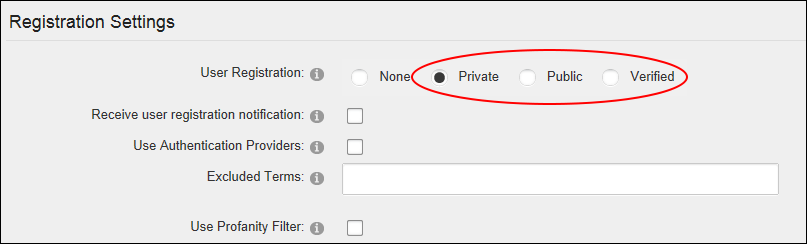
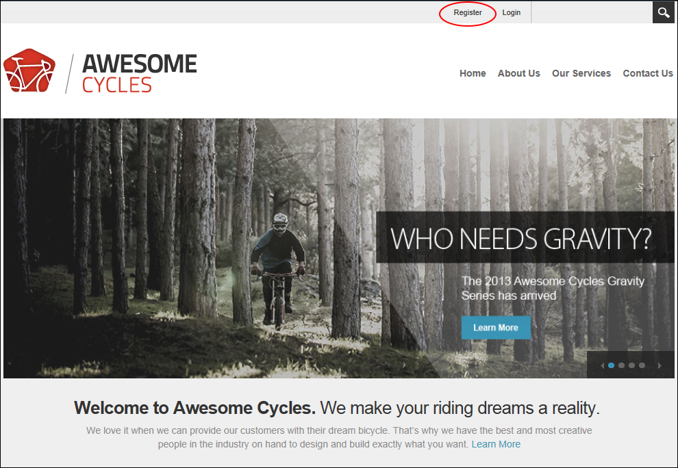

Enabling User Registration
How to allow site visitors to register as a member of the site. Enabling user registration displays the Register link on the Account Login module and a Register link on site pages. When a visitor registers a welcome message is sent to them containing their account and login details. A notification message is also sent to the primary administrator. User Registration is enabled and set as Private on new DNN installations.
- Navigate to Admin >
 Site Settings.
Site Settings.
-
Select the User Account Settings tab.
- Expand the Registration Settings section.
- At User Registration, select from the following registration types:
- Private: Visitors can apply to become a site member. DNN creates a user account for them, however access to the Registered User role is restricted until the account is authorized.
- Public: Visitors who successfully register gain immediate access to the Registered User security role. This is the default option, as shown in the below images. This is the default option.
- Verified: Visitors who successfully register must verifying their account by entering a verification code the first time they log in to the site. Once the account is verified the user gains access to the Registered User security role. This allows you to verify that the email address provided during registration is correct.

- Optional. At Receive User Registration Notification, to send a notification email to the user when they register. Note: A registration email will always be sent if the User Registration field above is set to Private because the Administrator will need to receive the notification to approve the user account.
-
Click the Update button. You may now want to customize the registration settings for your site. See "Configuring the Standard Registration Form" or See "Configuring a Custom Registration Form"

User Registration is enabled and the Register link displayed on the site page